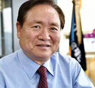
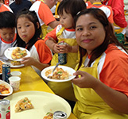
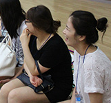

교보교육재단 > 재단소개
교보교육재단 > 재단소개
뉴스/활동소식
뉴스
-
<프레시안>과 기사 교류 중인 월간지 <작은것이 아름답다>가 교보교육재단의 교보교육대상 수상자로 선정됐다.
<작은것이 아름답다>는 일상에서 실천할 수 있는 구체적인 과제와 대안을 제시해 시민들의 생명의식을 고취한 점을 높이 평가받아 생명부문 대상을 받았다.
김기돈 <작은것이 아름답다> 편집장은 10일 <프레시안>과의 전화통화에서 "내년 창간 20주년을 앞두고 상을 받게 돼 기쁘다"면서 "그동안 <작은것이 아름답다>가 일관되게 추진해온 가치에 대해 사회적 동의가 형성됐다고 본다. '길동무'라는 차원에서 '함께 가겠다'는 의지를 확인했다"고 밝혔다.
-중략-
교보교육재단이 주관한 이번 시상은 오는 12일 진행되며, 생명부문 대상 <작은것이 아름답다> 외 인성부문 대상에는 부산의 금성초등학교(교장 남미숙), 리더십부문 대상에는 '젊은협업농장'(대표 박완)을 선정했다.
원문기사 보기
-
한때 전교생이 46명에 불과해 폐교 위기를 맞았던 부산 금성초는 문화예술사업을 통해 활로를 찾았다. 지역사회가 침체되면서 학교의 인기도 떨어졌지만, 작은 학교만이 가질 수 있는 독특한 교육환경을 살려보기로 한 것이 변화의 계기였다. 시작은 교육과정 다양화부터였다. 도심지에서 멀리 떨어진 만큼 숲과 가까운 지역 환경을 활용해 야외수업을 늘리면서 작은학교 모델을 찾아간 것. 여기에 학생자치를 늘리는 학교로 특색을 갖추면서 명성을 얻었다. 지금으로 따지면 대안학교 모델에 더 가까운 방식.
-중략-
교보교육재단은 올해부터 실시하는 교보교육대상의 첫 수상자로 금성초를 인성부문 수상자로 선정했다. 금성초가 특색 있는 교육과정을 운영했고 마을 전체의 공동체 문화를 변화하는 데 기여한 점을 들었다. 생명부문 대상과 리더십부문 대상에는 생태문화월간지 ‘작은 것이 아름답다’와 ‘젊은협업농장’이 각각 선정됐다.
원문기사 보기
-
'참사람 육성' 교보교육대상 제정 한국경제
교보교육대상 첫 수상자로 부산 금성초등학교와 사단법인 작은것이아름답다, 협동조합 젊은협업농장이 선정됐다.>
>
교보생명이 설립한 교보교육재단은 3일 인성, 생명, 리더십부문에서 참사람 육성이라는 교육의 본질적 목표를 앞서 실천한 인물과 단체에 교보교육대상을 주기로 하고 첫 수상자로 이들 단체를 선정했다고 발표했다. 교보교육대상 제정엔 교육사업에 관심이 컸던 고(故) 신용호 창립자의 뜻을 계승하자는 뜻도 담았다.
-중략-
리더십부문 대상을 받는 젊은협업농장(대표 박완)은 청년들이 자발적으로 조직한 협동조합형 교육농장으로 유기농업을 실천하면서 지역 농업인과 귀농인 등에게 유기농 교육을 하고 있다.
원문기사 보기
-
교보교육재단, 교보교육대상 제정...첫 수상자에 금성초교 등 3곳 이투데이
교보교육재단은 교보교육대상 수상자로 부산 금성초등학교, 사단법인 ‘작은 것이 아름답다’, 협동조합 ‘젊은협업농장’을 선정했다고 4일 밝혔다.
인성부문 대상에 선정된 부산의 금성초등학교(교장 남미숙)는 교사, 학생, 학부모, 마을주민이 교육활동에 주체적으로 참여하고 이 과정에서 아이들에게 민주적 시민성을 함양시킨 점이 수상의 이유다. 특히 아이들의 인성 성장을 위한 문화예술과 놀이중심의 창의적 교육과정, 학생자치, 마을공동체 활성화를 통해 공립초등학교의 대안적 모델을 창출한 점이 높게 평가 받았다.
-중략-
교보교육재단 측은 “인성과 생명, 리더십에 있어 참다운 인성함양과 생명존중의식을 고취하고 공동체 가치 확산을 위한 교육적 대안을 제시하는 이들을 선정, 시상하기 위해 제정됐다”며 “제도권 교육이 채우기 어려운 교육의 본질적 목표를 앞장서 실천한 인물과 단체를 발굴, 시상키로 했다”고 설명했다.
시상식은 12일 오후 6시 세종문화회관에서 열리며 각 부문의 대상 수상자는 각각 3000만 원의 상금과 상패를 받게 된다.
교보교육재단은 ‘'국민교육진흥’을 창업이념으로 삼은 교보생명이 1997년 설립한 공익 재단이다.
원문기사 보기
-
"참사람 키워낸 당신" 교보교육대상 첫 수상자 선정 매일경제
교보교육재단이 청소년 인성교육 활성화를 위해 마련한 첫 '교보교육대상' 수상자로 2일 부산 금성초등학교, 사단법인 '작은것이 아름답다', 협동조합 '젊은협업농장'을 선정했다. 교보교육대상은 인성과 생명중시, 리더십을 두루 갖춘 '참사람 육성'에 앞장선 인물이나 단체에 시상하는 것으로 대표적 문화공간인 교보문고의 설립 정신을 바탕으로 하고 있다.
-중략-
재단 측은 "제도권 교육이 채우기 어려운 교육의 본질적 목표를 앞장서 실천한 인물과 단체를 발굴해 시상을 해 나갈 것"이라고 밝혔다. 대상 수상자에게는 각각 3000만원의 상금과 상패가 지급되며, 시상식은 12일 오후 6시 세종문화회관에서 열린다.
원문기사 보기
-
교보교육대상에 금성초 등 3곳 내일신문
교보생명이 설립한 교보교육재단이 올해 처음 제정한 교보교육대상 수상자에 부산 금성초등학교, 사단법인 '작은 것이 아름답다', 협동조합 '젊은협업농장'이 선정됐다.
교보교육재단에 따르면 인성부문 대상에 선정된 부산의 금성초등학교(교장 남미숙)는 '함께하는 어울림, 따뜻한 돌봄, 몰입하는 배움'이라는 교육철학을 중심으로 교사, 학생, 학부모, 마을주민이 교육활동에 주체적으로 참여하고 협력한 사례다.
-중략-
대상 수상자에게는 각각 상금 3000만원과 상패가 지급되며, 시상식은 12일 오후 6시 세종문화회관에서 열린다.
한편 교보교육재단은 '국민교육진흥'을 창업이념으로 삼은 교보생명이 1997년 설립한공익 재단이다.
원문기사 보기
-
교보교육대상 제정…첫 수상자에 금성초교 등 3곳(종합) 연합뉴스
(서울=연합뉴스) 김용래 기자 = 교보교육재단은 2일 첫 교보교육대상 수상자로 부산 금성초등학교, 사단법인 '작은 것이 아름답다', 협동조합 '젊은협업농장'을 선정했다고 밝혔다.
인성부문 대상에 선정된 부산의 금성초등학교(교장 남미숙)는 연극, 영화, 뮤지컬 등 예술교육과 학생자치, 마을공동체 활성화에 중점을 두고 다양한 교육활동을 이어오며 공립초등학교의 대안적 모델을 창출한 점이 수상 이유로 꼽혔다.
-중략-
대상 수상자에게는 각각 3천만 원의 상금과 상패가 지급되며, 시상식은 12일 오후 6시 세종문화회관에서 열린다.
교보교육재단은 '국민교육진흥'을 창업이념으로 삼은 교보생명이 1997년 설립한 공익 재단이다.
원문기사 보기
-
교보생명, 보육원 출신 대학생에 '희망다솜장학금' 전달 아주경제
교아주경제 장슬기 기자 = 교보생명은 천안소재 연수원 계성원에서 보육원 및 소년소녀 가정 출신 새내기 대학생 등 총 80여명에게 '희망다솜장학금'을 전달했다고 25일 밝혔다.
교보생명은 지난 2003년부터 소외계층 청소년들이 미래를 향한 꿈을 펼칠 수 있도록 돕기 위해 희망다솜장학금을 전달하고 있다.
매년 대학 신입생 20여명을 선발해 졸업할 때까지 학자금을 지원하며 성적이 우수한 학생에게는 별도의 성적우수장학금도 준다.
-중략-
한편 올해는 장학금 전달식이 끝난 후 2박 3일간 교보생명 계성원에서 '희망다솜 장학생 겨울캠프'가 진행될 예정이다. 원문기사 보기
-
교보생명, 소외계층 대학생에 ‘희망다솜장학금’ 전달 컨슈머타임스
교보생명, 소외계층 대학생에 ‘희망다솜장학금’ 전달
[컨슈머타임스 조선혜 기자] 교보생명(대표 신창재)은 보육원∙소년소녀가장 출신 등 소외계층 대학생 20명을 포함한 총 70명에게 ‘교보생명 희망다솜장학금’을 전달했다고 21일 밝혔다.
교보생명은 지난 2003년부터 소외계층 청소년들이 미래를 향한 꿈을 펼칠 수 있도록 돕기 위해 ‘희망다솜장학금’을 전달하고 있다. 매년 대학신입생 20여명을 선발해 졸업할 때까지 학자금을 지원한다. 성적이 우수한 학생에게는 별도의 성적우수장학금도 준다.
장학금 전달식 후 21일부터 2박3일간 무주덕유산리조트에서 ‘2015 희망다솜 장학생 여름캠프’도 진행한다.
교보생명은 희망다솜 온라인 커뮤니티를 마련해 재학생, 졸업생 간 교류도 지원하고 있다. 장학생들은 커뮤니티를 통해 학업∙진로 관련 정보를 나누는 것은 물론, 오프라인 모임과 매년 여름·겨울캠프에 참여해 다양한 문화생활 체험과 봉사활동 기회를 갖고 있다.
원문기사 보기
활동소식
청소년과 장애인이 함께 만들어...
"교육은 빈칸을 채워주는 일"...
2015 교보교육 심포지엄, 청소년의 인성이 미래다...
현직 기자와의 만남, 대학생 기자단의...
2015년 교보교육재단의 사업 이렇게 바뀝니다!...
2014년 학교환경교육 지원단체 사업결과...
같은 하늘 아래, 다양한 모습의 우리 - 다문화가족캠프...
5월 다솜이 가족자원봉사 프로그램을 진행하였습니다...
청소년과 장애인이 함께 만들어 함께 만들어 가는, 세상에 하나 뿐인 캠프!
지난 8월3일부터 5일까지 교보생명과 함께하는 ‘더불어 행복하기’ 2차 캠프가 엘리엘 동산에서 열렸습니다.
중고등학생들로 이루어진 청소년 봉사자들과 이곳에 지내고 있는 장애인들, 프로그램의 원활한 진행을 이끌어
줄 대학생 스태프들, 그리고 기관의 스태프들까지 총 56명의 참가자들이 4개의 조를 이루어 2박 3일 동안
함께 하게 되었습니다.
‘더불어 행복하기’ 청소년자원봉사캠프의 가장 큰
특징은 봉사자들과 장애인들이 함께 짝을 맺어 주체적으로 캠프의 프로그램들을 해결하면서
소통하고 공감하는 능력을 길러나간다는 점입니다...
웹페이지에서 내용 자세히 보기
"교육은 빈칸을 채워주는 일" 김대영 신임이사장 인터뷰
교보교육재단 1기 대학생 기자단은 김대영 신임 이사장을 만나 교보교육재단의 현재와 미래에 대해 이야기를 나누었다.
“교육은 누군가의 빈칸을 채워주는 일이다. 교육을 통해 부족한 부분이 채워지고 그 사람이 다시 성장하여 다른 누군가의 빈칸을 채워주는
순환적인 시스템이 진행되어야 사회가 발전할 수 있다. 이것이 바로 교육이 가진 무한한 힘이다.”
교보교육재단 김대영 이사장의 말이다. 김 이사장은 2015년 6월 10일 교보교육재단의 5대 이사장으로 취임했다. 김 이사장은 28년 동안
교보생명에서 근무한 기업인이다.
교보생명 인사담당임원, 준법감시인 등을 맡아왔다. 오랜 시간 기업인으로 살아온 그가 어떻게 공익재단의
임원이 됐을까?...웹페이지에서 내용 자세히 보기
2015 교보교육 심포지엄, 청소년의 인성이 미래다
인성이 먼저일까? 공부가 먼저일까?
이 질문에 대다수의 사람들은 인성이 먼저라고 대답합니다. 하지만 안타깝게도 우리의 현실은 대답과는 다릅니다.
명문 학교 진학과 출세를 위해 인성보다는 공부에 치중하고, 나의 성공을 위해 남을 밟고 일어서는 것이 당연시 되고 있는
것이 바로 한국 교육의 현실입니다.
지식과 기술 위주의 공부에 주력하면서 청소년들은 삶에 대한 고민보다는 당장 눈앞에
닥친 입시교육에 매진하고 있습니다. 이로 인해 학생들의 인성은 무너졌고 교사의 권위가 학교에서 사라지게 되었습니다...
웹페이지에서 내용 자세히 보기
현직 기자와의 만남, 대학생 기자단의 시야를 넓히다
"의식의 흐름을 따라 기사를 쓰지 마세요."
눈 앞에 펼쳐진 하얀 종이 앞에서 백지의 공포를 느끼는 경우가 있습니다.
첫 문장만 나오면 술술 글이 써질 것 같은데, 그 한 문장이 떠오르지 않아 몇 시간을 고민한 적도 있습니다.
어렵사리 끝 문장을 마쳤는데 읽는 재미가 없으면 '처음부터 다시 써야하나'하고 괴로워한 적도 있습니다.
글을 쓰는 사람이라면 누구나 겪는 고민일 것입니다.
특히나 마감날짜가 있는 기자라면 눈 앞에 닥친 마감 앞에서 더욱 고민이 클 것입니다.
교보 대학생 기자단들이 겪은 어려움도 이것이었습니다.
지난 2월에 시작하여 10개월 간 부지런히 현장을 취재하고, 기사를 썼습니다...
웹페이지에서 내용 자세히 보기
2015년 교보교육재단의 사업 이렇게 바뀝니다!
교보교육재단이 앞으로 꾸려나갈 사업은 크게 장학사업, 리더십교육, 인성교육, 생명교육, 교보교육대상 시상사업입니다.
새롭게 바뀐 재단의 사업에 많은 관심 부탁드립니다.
웹페이지에서 내용 자세히 보기
2014년 학교환경교육 지원단체 사업결과 워크샵을 진행하였습니다.
지난 1월 28일(수)부터 29일(목)까지 이틀 간 천안에 위치한 교보생명 계성원(연수원)에서 「2014년 ‘학교환경교육지원’
학교의 사업결과 평가회 및 워크샵」을 가졌습니다.
워크샵 첫날에는 재단에서 작년에 지원한 총 12개 학교가 작년 한 해 진행했던 환경교육 활동 내용을 함께 공유하고,
논의하는 자리를 가졌습니다. 이어서 지원학교 담당 선생님과 학교별 책임멘토가 함께 참여해,
학교별 사업의 성과평가뿐만 아니라 2015년 사업운영에 방향에 대해서도 함께 논의하는 자리를 가졌습니다...
웹페이지에서 내용 자세히 보기
같은 하늘 아래, 다양한 모습의 우리 - 다문화가족캠프 '지구촌한가족만들기'
지난 해 안전행안부에서 외국인 주민현황에 따르면 우리나라 인구 100명 중 3명은 외국인인 것으로 나타났다.
실제로 외국인 패널들로만 이루어진 TV프로그램이 큰 인기를 끌고, 길거리를 다니면서 한국어를 유창하게 하는 외국인도
심심찮게 볼 수 있다. '단일민족'이라는 수식어가 낯설어진 시대에, 다문화는 이미 우리의 삶 곳곳에 스며들었다.
교보교육재단의 후원과 서울특별시동부교육지원청의 주최로 진행되는 '지구촌 한가족 만들기'는 더 이상 '외국인'이 아닌 같은
'한국인'으로서 뿌리 내리고 가정을 이루어 살고 있는 이들을 위해 마련된 다문화 가족 캠프다.
다문화 가정 학생들에게
'다르기 때문에 더 아름다울 수 있다'는 자긍심을 심어주고 문화의 다양성을 이해하는 열린 가치관을 형성하기 위한 행사로
2011년 첫 개최 이후 닷새째를 맞았다.
웹페이지에서 내용 자세히 보기
5월 다솜이 가족자원봉사 프로그램을 진행하였습니다.
5월 9일(토) 올해 두 번째 다솜이 가족자원봉사 프로그램을 진행하였습니다.
성북구 정릉동 삼덕마을에서 ‘빗물로 키우는 마을텃밭 만들기’라는 주제로 열린 이번 프로그램에는 전국에서 참가하신 16가족
50여명이 함께 해주셨습니다.
구미, 익산, 춘천, 대전, 광명, 부천, 분당, 일산, 주말 이른 아침 먼 길을 마다 않고 전국 각지에서 많은 가족들이 프로그램에 참여해 주셨습니다.
오전 빗물교육과 도시텃밭 교육에 이어 오후 빗물텃밭 만들기로 이어지는 활동 내내 모든 분들이 힘든 내색 하나 없이 즐겁게 또 내
일처럼 활동에 임해 주셨습니다.
웹페이지에서 내용 자세히 보기